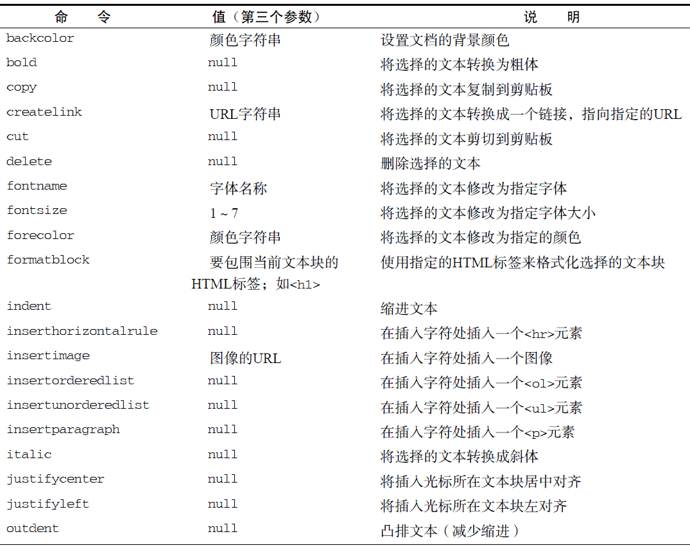
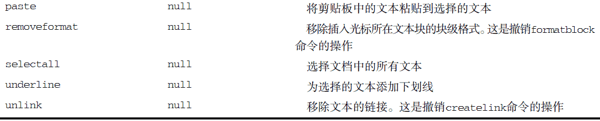

14.5 富文本编辑
富文本编辑，又称为WYSIWYG（What You See Is What You Get，所见即所得）。在网页中编辑富文本内容，是人们对Web 应用程序最大的期待之一。虽然也没有规范，但在IE 最早引入的这一功能基础上，已经出现了事实标准。而且，Opera、Safari、Chrome 和Firefox 都已经支持这一功能。这一技术的本质，就是在页面中嵌入一个包含空HTML 页面的iframe。通过设置designMode 属性，这个空白的HTML 页面可以被编辑，而编辑对象则是该页面<body>元素的HTML 代码。designMode 属性有两个可能的值："off"（默认值）和"on"。在设置为"on"时，整个文档都会变得可以编辑（显示插入符号），然后就可以像使用字处理软件一样，通过键盘将文本内容加粗、变成斜体，等等。
可以给iframe 指定一个非常简单的HTML 页面作为其内容来源。例如：
<!DOCTYPE html>
<html>
<head>
<title>Blank Page for Rich Text Editing</title>
</head>
<body>
</body>
</html>
这个页面在iframe 中可以像其他页面一样被加载。要让它可以编辑，必须要将designMode 设置为"on"，但只有在页面完全加载之后才能设置这个属性。因此，在包含页面中，需要使用onload 事件处理程序来在恰当的时刻设置designMode，如下面的例子所示：
<iframe name="richedit" style="height:100px;width:100px;" src="blank.htm">
</iframe>
<script type="text/javascript">
EventUtil.addHandler(window, "load",
function() {
frames["richedit"].document.designMode = "on";
});
</script>
等到以上代码执行之后，你就会在页面中看到一个类似文本框的可编辑区字段。这个区字段具有与其他网页相同的默认样式；不过，通过为空白页面应用CSS 样式，可以修改可编辑区字段的外观。
14.5.1 使用contenteditable属性
另一种编辑富文本内容的方式是使用名为contenteditable 的特殊属性，这个属性也是由IE 最早实现的。可以把contenteditable 属性应用给页面中的任何元素，然后用户立即就可以编辑该元素。
这种方法之所以受到欢迎，是因为它不需要iframe、空白页和JavaScript，只要为元素设置contenteditable 属性即可。
<div class="editable" id="richedit" contenteditable></div>
这样，元素中包含的任何文本内容就都可以编辑了，就好像这个元素变成了<textarea>元素一样。
通过在这个元素上设置contenteditable 属性，也能打开或关闭编辑模式。
var div = document.getElementById("richedit");
div.contentEditable = "true";
contenteditable 属性有三个可能的值："true"表示打开、"false"表示关闭，"inherit"表示从父元素那里继承（因为可以在contenteditable 元素中创建或删除元素）。支持contenteditable属性的元素有IE、Firefox、Chrome、Safari 和Opera。在移动设备上，支持contenteditable 属性的浏览器有iOS 5+中的Safari 和Android 3+中的WebKit。
14.5.2 操作富文本
与富文本编辑器交互的主要方式，就是使用document.execCommand()。这个方法可以对文档执行预定义的命令，而且可以应用大多数格式。可以为document.execCommand()方法传递3 个参数：要执行的命令名称、表示浏览器是否应该为当前命令提供用户界面的一个布尔值和执行命令必须的一个值（如果不需要值，则传递null）。为了确保跨浏览器的兼容性，第二个参数应该始终设置为false，因为Firefox 会在该参数为true 时抛出错误。
不同浏览器支持的预定义命令也不一样。下表列出了那些被支持最多的命令。


其中，与剪贴板有关的命令在不同浏览器中的差异极大。Opera 根本没有实现任何剪贴板命令，而Firefox 在默认情况下会禁用它们（必须修改用户的首选项来启用它们）。Safari 和Chrome 实现了cut 和copy，但没有实现paste。不过，即使不能通过document.execCommand()来执行这些命令，但却可以通过相应的快捷键来实现同样的操作。
可以在任何时候使用这些命令来修改富文本区域的外观，如下面的例子所示。
//转换粗体文本
frames["richedit"].document.execCommand("bold", false, null);
//转换斜体文本
frames["richedit"].document.execCommand("italic", false, null);
//创建指向www.wrox.com 的链接
frames["richedit"].document.execCommand("createlink", false,
"http://www.wrox.com");
//格式化为1 级标题
frames["richedit"].document.execCommand("formatblock", false, "<h1>");
运行一下
同样的方法也适用于页面中contenteditable 属性为"true"的区块，只要把对框架的引用替换成当前窗口的document 对象即可。
//转换粗体文本
document.execCommand("bold", false, null);
//转换斜体文本
document.execCommand("italic", false, null);
//创建指向www.wrox.com 的链接
document.execCommand("createlink", false,
"http://www.wrox.com");
//格式化为1 级标题
document.execCommand("formatblock", false, "<h1>");
运行一下
需要注意的是，虽然所有浏览器都支持这些命令，但这些命令所产生的HTML 仍然有很大不同。例如，执行bold 命令时，IE 和Opera 会使用<strong>标签包围文本，Safari 和Chrome 使用<b>标签，而Firefox 则使用<span>标签。由于各个浏览器实现命令的方式不同，加上它们通过innerHTML 实现转换的方式也不一样，因此不能指望富文本编辑器会产生一致的HTML。
除了命令之外，还有一些与命令相关的方法。第一个方法就是queryCommandEnabled()，可以用它来检测是否可以针对当前选择的文本，或者当前插入字符所在位置执行某个命令。这个方法接收一个参数，即要检测的命令。如果当前编辑区域允许执行传入的命令，这个方法返回true，否则返回false。例如：
var result = frames["richedit"].document.queryCommandEnabled("bold");
如果能够对当前选择的文本执行"bold"命令，以上代码会返回true。需要注意的是，query-CommandEnabled()方法返回true，并不意味着实际上就可以执行相应命令，而只能说明对当前选择的文本执行相应命令是否合适。例如，Firefox 在默认情况下会禁用剪切操作，但执行queryCommand-Enabled("cut")也可能会返回true。
另外，queryCommandState()方法用于确定是否已将指定命令应用到了选择的文本。例如，要确定当前选择的文本是否已经转换成了粗体，可以使用如下代码。
var isBold = frames["richedit"].document.queryCommandState("bold");
运行一下
如果此前已经对选择的文本执行了"bold"命令，那么上面的代码会返回true。一些功能全面的富文本编辑器，正是利用这个方法来更新粗体、斜体等按钮的状态的。
最后一个方法是queryCommandValue()，用于取得执行命令时传入的值（即前面例子中传给document.execCommand()的第三个参数）。例如，在对一段文本应用"fontsize"命令时如果传入了7，那么下面的代码就会返回"7"：
var fontSize = frames["richedit"].document.queryCommandValue("fontsize");
运行一下
通过这个方法可以确定某个命令是怎样应用到选择的文本的，可以据以确定再对其应用后续命令是否合适。
14.5.3 富文本选区
在富文本编辑器中，使用框架（iframe）的getSelection()方法，可以确定实际选择的文本。
这个方法是window 对象和document 对象的属性，调用它会返回一个表示当前选择文本的Selection对象。每个Selection 对象都有下列属性。
-
anchorNode：选区起点所在的节点。
-
anchorOffset：在到达选区起点位置之前跳过的anchorNode 中的字符数量。
-
focusNode：选区终点所在的节点。
-
focusOffset：focusNode 中包含在选区之内的字符数量。
-
isCollapsed：布尔值，表示选区的起点和终点是否重合。
-
rangeCount：选区中包含的DOM 范围的数量。
Selection 对象的这些属性并没有包含多少有用的信息。好在，该对象的下列方法提供了更多信息，并且支持对选区的操作。
-
addRange(range)：将指定的DOM 范围添加到选区中。
-
collapse(node, offset)：将选区折叠到指定节点中的相应的文本偏移位置。
-
collapseToEnd()：将选区折叠到终点位置。
-
collapseToStart()：将选区折叠到起点位置。
-
containsNode(node)：确定指定的节点是否包含在选区中。
-
deleteFromDocument()：从文档中删除选区中的文本，与document.execCommand("delete",false, null)命令的结果相同。
-
extend(node, offset)：通过将focusNode 和focusOffset 移动到指定的值来扩展选区。
-
getRangeAt(index)：返回索引对应的选区中的DOM范围。
-
removeAllRanges()：从选区中移除所有DOM 范围。实际上，这样会移除选区，因为选区中至少要有一个范围。
-
reomveRange(range)：从选区中移除指定的DOM 范围。
-
selectAllChildren(node)：清除选区并选择指定节点的所有子节点。
-
toString()：返回选区所包含的文本内容。
Selection 对象的这些方法都极为实用，它们利用了（第12 章讨论过的）DOM范围来管理选区。
由于可以直接操作选择文本的DOM 表现，因此访问DOM范围与使用execCommand()相比，能够对富文本编辑器进行更加细化的控制。下面来看一个例子。
var selection = frames["richedit"].getSelection();
//取得选择的文本
var selectedText = selection.toString();
//取得代表选区的范围
var range = selection.getRangeAt(0);
//突出显示选择的文本
var span = frames["richedit"].document.createElement("span");
span.style.backgroundColor = "yellow";
range.surroundContents(span);
运行一下
以上代码会为富文本编辑器中被选择的文本添加黄色的背景。这里使用了默认选区中的DOM 范围，通过surroundContents()方法将选区添加到了带有黄色背景的<span>元素中。
HTML5 将getSelection()方法纳入了标准，而且IE9、Firefox、Safari、Chrome 和Opera 8 都实现了它。由于历史原因，在Firefox 3.6+中调用document.getSelection()会返回一个字符串。为此，可以在Firefox 3.6+中改作调用window.getSelection()，从而返回selection 对象。Firefox 8 修复了document.getSelection()的bug，能返回与window.getSelection()相同的值。
IE8 及更早的版本不支持DOM范围，但我们可以通过它支持的selection 对象操作选择的文本。
IE 中的selection 对象是document 的属性，本章前面曾经讨论过。要取得富文本编辑器中选择的文本，首先必须创建一个文本范围（请参考第12 章中的相关内容），然后再像下面这样访问其text 属性。
var range = frames["richedit"].document.selection.createRange();
var selectedText = range.text;
虽然使用IE 的文本范围来执行HTML 操作并不像使用DOM 范围那么可靠，但也不失为一种有效的途径。要像前面使用DOM 范围那样实现相同的文本高亮效果，可以组合使用htmlText 属性和pasteHTML()方法。
var range = frames["richedit"].document.selection.createRange();
range.pasteHTML("<span style=\"background-color:yellow\"> " + range.htmlText +"</span>");
以上代码通过htmlText 取得了当前选区中的HTML，然后将其放在了一对<span>标签中，最后又使用pasteHTML()将结果重新插入到了选区中。
14.5.4 表单与富文本
由于富文本编辑是使用iframe 而非表单控件实现的，因此从技术上说，富文本编辑器并不属于表单。换句话说，富文本编辑器中的HTML 不会被自动提交给服务器，而需要我们手工来提取并提交HTML。为此，通常可以添加一个隐藏的表单字段，让它的值等于从iframe 中提取出的HTML。具体来说，就是在提交表单之前，从iframe 中提取出HTML，并将其插入到隐藏的字段中。下面就是通过表单的onsubmit 事件处理程序实现上述操作的代码。
EventUtil.addHandler(form, "submit",
function(event) {
event = EventUtil.getEvent(event);
var target = EventUtil.getTarget(event);
target.elements["comments"].value = frames["richedit"].document.body.innerHTML;
});
运行一下
在此，我们通过文档主体的innerHTML 属性取得了iframe 中的HTML，然后将其插入到了名为"comments"的表单字段中。这样可以确保恰好在提交表单之前填充"comments"字段。如果你想在代码中通过submit()来手工提交表单，那么一定不要忘记事先执行上面的操作。对于contenteditable元素，也可以执行类似操作。
EventUtil.addHandler(form, "submit",
function(event) {
event = EventUtil.getEvent(event);
var target = EventUtil.getTarget(event);
target.elements["comments"].value = document.getElementById("richedit").innerHTML;
});